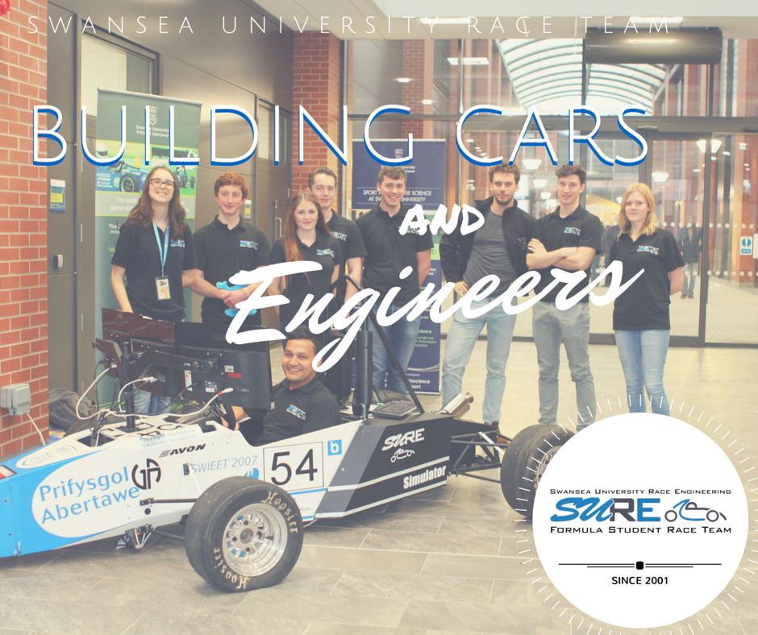

Profissional
Habilidades
| Idiomas |
Nível |
| Alemão |
A1.2 (Básico) |
| Inglês |
Fluente |
| Linguagens de programação |
Nível |
| C/C++ |
Experiente |
| Arduino |
Experiente |
| G (LABVIEW) |
Básico |
| HTML5, CSS |
Básico |
Experiências
- Bolsa de iniciação científica com Prof. Roberto Calos Moro - criação de projeto Arduino e LABVIEW de maio/2017 a janeiro/2018
- Engenharia Aeroespacial pelo Ciências sem Fronteiras na Swansea Univesity de setembro/2015 a setembro/2016
- Integrante da equipe de Aerodesign na Swansea University Racing Engineering(SURE) - Time de Formula Student

Voltar